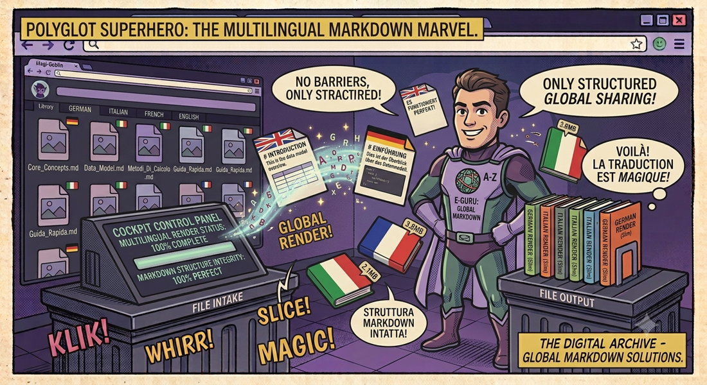

← Lingua & vocemdtranslator
Traduci documenti Markdown in qualsiasi lingua preservando la struttura: tabelle, heading, code block, liste — tutto rimane al suo posto. Tre motori di traduzione, CLI e GUI.
📖 Cos'è
mdtranslatorè un traduttore specializzato per documenti Markdown che preserva intatta la formattazione originale durante la traduzione. A differenza dei traduttori generici — che distruggono tabelle, mescolano heading e corrompono blocchi di codice — mdtranslator usa un parser Markdown dedicato per isolare semanticamente ogni elemento: heading (H1-H6 con marker # preservati), tabelle (struttura pipe e allineamento intatti), code block (contenuto mai tradotto, backtick preservati), immagini (sintassi  intatta), liste nidificate, blockquote (>), link e horizontal rules.
👤 A chi serve
mdtranslator è pensato per sviluppatori, technical writer e chiunque lavori con documentazione in Markdown multilingua. Team open-source che mantengono README e documentazione in più lingue possono tradurre rapidamente senza perdere la formattazione. Blogger e content creator che scrivono in Markdown (Jekyll, Hugo, Next.js MDX) possono localizzare interi siti statici preservando link e struttura. Ricercatori che collaborano internazionalmente possono tradurre paper e note tecniche. Chi traduce documentazione API apprezza la protezione dei blocchi di codice (mai toccati dal traduttore).
⚙️ Come funziona
La CLI accetta un file Markdown e produce un nuovo file tradotto nella lingua target. Il processo: il parser scompone il Markdown in elementi atomici (heading, paragrafi, tabelle, code block, liste, immagini, blockquote), isolando il testo traducibile dalla sintassi. Ogni elemento viene inviato al motore scelto (Google via API gratuita, DeepL via API key, o Edge Translate). Le tabelle vengono tradotte cella per cella preservando pipe e allineamento; i code block vengono saltati; i link mantengono URL intatti. Il ricompositoreriassembla il Markdown con la formattazione originale. La GUI (Tkinter/customtkinter) offre file browser, dropdown lingue,
🎯 Il Problema
Tradurre un file Markdown con strumenti generici (Google Translate via browser, copy-paste) distrugge
sistematicamente la struttura: le tabelle si sfaldano, gli heading perdono i marker #,
i blocchi di codice vengono tradotti (spezzandoli) e i link si corrompono. mdtranslator risolve tutto questo
con un parser Markdown dedicato che isola semanticamente ogni elemento.
🌐 Tre Motori di Traduzione
| Motore | Google 🏆 | DeepL | Edge |
|---|---|---|---|
| Prezzo | Gratuito | Free tier disponibile | Gratuito |
| API Key | Non richiesta | Richiesta | Non richiesta |
| Qualità | Buona | Eccellente | Buona |
| Rate Limit | Sì | Dipende dal piano | Moderato |
🖥️ CLI Mode
# Traduzione base (Google, lingua target obbligatoria) python mdtranslator.py documento.md -t en # Specifica lingua sorgente, motore e output python mdtranslator.py documento.md -t fr -s it -e deepl -o output.md # Opzioni disponibili: # -t, --target Lingua di destinazione (obbligatoria) # -s, --source Lingua sorgente (auto-detect se omessa) # -e, --engine Motore: google (default), deepl, edge # -o, --output Percorso file di output
🖱️ GUI Mode
Interfaccia grafica costruita con Tkinter (con supporto opzionale customtkinter per un look moderno):
- File browser — Seleziona il file Markdown da tradurre con dialog nativo
- Selezione lingue — Dropdown per lingua sorgente e target
- Scelta motore — Radio button per Google, DeepL o Edge
- Progresso in tempo reale — Barra di avanzamento durante la traduzione
- Anteprima output — Visualizzazione del Markdown tradotto prima del salvataggio
📋 Elementi Markdown Supportati
| Elemento | Supporto | Comportamento |
|---|---|---|
| Heading (H1-H6) | ✅ | Marker # preservati, solo testo tradotto |
| Tabelle | ✅ | Struttura pipe e allineamento intatti |
| Code Block | ✅ | Contenuto NON tradotto, backtick preservati |
| Immagini | ✅ | Sintassi  preservata |
| Liste (ul/ol) | ✅ | Marker -/*/1. e nidificazione preservati |
| Blockquote | ✅ | Prefisso > preservato |
| Horizontal Rules | ✅ | --- lasciati intatti |
🏗️ Architettura
mdtranslator/ ├── mdtranslator.py # Entry point: CLI parsing + GUI launch ├── parser/ # Markdown parser modulare │ ├── element.py # Classi per ogni elemento MD (heading, table, code...) │ ├── table.py # Gestione dedicata tabelle Markdown │ └── utils.py # Utility di parsing e splitting ├── engines/ # Moduli di traduzione │ ├── google.py # Google Translate (free, no key) │ ├── deepl.py # DeepL API (richiede key) │ └── edge.py # Microsoft Edge Translate (free) ├── images/ # Asset GUI └── requirements.txt # Dipendenze Python
🔒 Privacy
Il testo viene inviato ai motori di traduzione scelti (Google, DeepL o Microsoft Edge) tramite le rispettive API. DeepL offre il miglior rapporto qualità/privacy. Per uso offline, è possibile integrare motori locali. Il file Markdown originale non viene mai modificato — l'output è sempre un nuovo file.